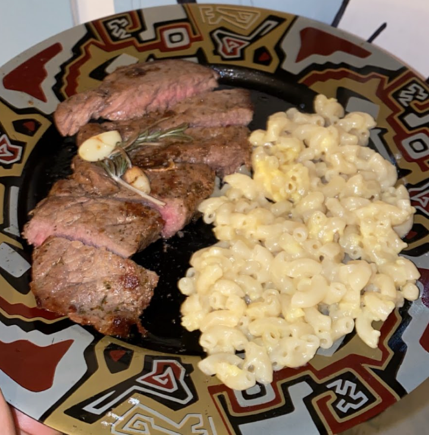

Food
Like many people, food has great social, cultural, and personal significance
to me :)
As an Egyptian who grew up in the Middle East, I was introduced to an eclectic
range of authentic cuisines: from Ethipian to Azerbaijani to Thai,
the possibilities were endless all the time.
Cooking is easily one of my all time favorite hobbies, and also a love language.
I consider myself a hobbyist, which means I get it wrong 50% of the time, but
that's the fun in it for me!
I try to combine elements from many cuisines, regions, and people I meet and cook
for throughout my life. My food is heavily inspired by the person I'm making it for,
as well as the available ingredients (college budget)
27th of Dec, 2023
coconut chicken noodle soup
I wanted a crossover between green thai coconut curry and chicken noodle soup, and this was the result.
This was the perfect comfort meal for those post-holidays blues. It was hearty and filling, with that extra coconut creaminess.
I seared chicken breast with some ginger-garlic lemongrass paste I had from before, along with carrots and celery. Added water, coconut milk, bay leaves and cardamom, and let it simmer ~2hrs. Soup!
Top picks
pomegranate ginger eggs
Top 3 ways to consume eggs, easily
23rd of Dec, 2023
pomegranate ginger eggs
Inspired by a pomegranate about to go bad, this was one of the best breakfasts I had all year! The flavors were so unique and complemented each other very nicely.
2 basted eggs + pomegranate arils cooked in olive oil, garlic and ginger.
I also made a crispy ginger garnish with some julienned garlic fried in oil, and toasted some whole-wheat bread using the remaining oil. There's a thin layer of cream cheese whipped with rose honey and black pepper on the toast
23rd of Dec, 2023
coconut crusted chicken with creamy pasta
I had some shredded coconut to get rid of, and was craving some kind of crispy, breaded chicken and creamy pasta, so I made this.
Crispy coconut crusted pan fried chicken, and a pasta in a simple creamy sauce made with chicken fond, butter, olive juice and cracked pepper.
Topped with green olives and more black pepper. Simple but delicious!
2nd of Dec, 2023
dates and olive chicken stew
I wanted a hearty, bulk exam meal I could easily reheat and feel good eating, and got a plate of chicken legs on sale, so I made this and it hit the spot. It was so good I had it for breakfast the next day.
Pan seared chicken legs and onions stewed in a sweet Arabian date, cinnamon and orange sauce with lots of green olives. Finished in the oven.
The dates caramelize really nicely and give a nice deep sweetness contrasted by bitter olives. It was also falling off the bone effortlessly. Awesome experience

Nov, 2023
steak + white cheddar mac&cheese
A perfect medium-rare steak is a luxury, one that requires disabling the smoke alarm (don't tell my landlord).
I can't remember exactly what cut of meat this is, but I think it's Sterling Silver Stiploin (based on the shape and vague recollection).
For someone who enjoys steak as much as I do, I don't make it nearly enough. When I do, it's the ultimate treat - often paired with store brand white cheddar
mac&cheese to make my ultimate indulgence meal.
10th of Oct, 2023
chicken hearts
A childhoos staple that I tackled recently after years of intimidation. I struggle with cooking organs (i'm looking at you, liver) and this is no exception.
Cleaning the hearts was simple and straightforward, which made the process more pleseant. I ended up searing the hearts first with heaps of onion and aromatics before adding tomato paste and water.
I didn't exactly replicate that childhood nostalgic taste I was looking for, but I wasn't upset by how they turned out. I definitely overcooked them given how chewy they were, but all
in all, this was succesful. I had these over rice and some blanched/pan-fried asparagus for a quick weeknight dinner.
3rd of Sept, 2023
chai cinnamon rolls
As an avid cinnamon roll enthusiast, I'm always looking for a new way to change up the staple, and this is a simple way to elevate what is an already incredible pastry.
Following my usual cinnamon roll recipe, I added some ground nutmeg, cardamom, and clove to the cinnamon-sugar butter spread. I also steeped a couple chai handbags in some heavy cream to make this quick and easy glaze(?).
These were incredible, as always, and make a recurring appearance in my cinnamon roll rotation.
I made these as a thank you to a friend for letting me cat-sit for them, and they said they equally enjoyed them :) Reviews were glowing from everyone else too, 10/10
2nd of Sept, 2023
tofu stirfry
A quick weeknight staple, I make some variation of this multiple nights a week.
This one was special because I made my own chilli-crisp which packed a pleasant punch. I also got the tofu to crisp up really nicely without burning on here, which is always a win.
Served in the plastic tofu container in a bold protest to avoid doing dishes :)
23rd of July, 2023
bbq day!
I had an abundance of cheese about to go bad, and friends I hadn't seen in a while due to a hectic work schedule. Naturally and logically, this called for a bbq.
I made a pretty awesome mac&cheese, if I do say so myself. The criteria? It's simple:
1)creamy, but not too saucy it lacks structural integrity
2)zesty, hearty flavor (bland mac&cheese sucks)
3)crispy exterior, soft and warm interior
Safe to say, this delivered. I also made some Turkish kebab skewers with some spices traditionally found in Middle Eastern bbq. I grilled those on a propane grill, along with those peach slices (were also going to go bad), and they both had
that perfect smokey, charred summer flavor. I gave them a squeeze of lemon juice right off the grill for some brightness.
Not pictured here is a garlic-dill and cucumber yogurt sauce to go with everything.
Testimonials:
-My friend Ben (certified picky-eater™, mac&cheese avoider and sauce hater), said this is the only mac&cheese he will eat. Ben also had many skewers and said he'd pay me to make him
those kebabs again
-My friend Jesse (also certified picky-eater™ and honest person) said it was the best mac&cheese they've ever had.
I've made so much sh*t throughout our friendship, so I know my friends aren't afraid to be honest with me ;)
19th of July, 2023
bagels
These were unfortunately....a miss, to put it kindly. This definitely tanked my confidence with bread/yeast, especially considering how high it used to be.
I'm not really sure what went wrong here - they didn't rise as much as they should've, and had a very chewy (almost rubbery) texture. I think part of the problem is also that I put them onto this wire rack to rise/after taking them out of the waterbath, and I think that denatured the shape of them a bit.
Having said that, the crust was satisfying and crunchy with a soft(er) interior,
and any homemade "bread" trumps store bought bread as a breakfast vessel. I had some pretty decadant breakfast sandwiches that whole week - crispy fried egg, avocado, tomato, and homemade pickled red onions.
15th of March, 2023
coconut cake with spiced citrus buttercream
I made this as a birthday cake for my friend Mik, and it was such a fun project! I don't bake a whole lot anymore (and when I do it's bread), so it's fun to get back into it.
This was 2 layers of a coconut sponge, which baked better than I expected! It had that perfect, airy crumble you want from a sponge cake.
I made a spiced citrus buttercream with various citrus zests and juices (orange, lemon, and grapefruit) mixed with ginger, nutmeg and clove. The acidity from the citrus
cut through the buttercream, which was unfrotunately quite fatty and dense (this is American buttercream slander).
I tried decorating it with a coat of toasted coconut flakes on the outside, but it ultimately didn't do much to elevate the look. I think the biggest issue was how
shabby the frosting was on the top. This was my first time frosting a whole cake (as well as piping the text) and for a first attempt, I don't think it's horrible.
My one grievance with this cake was the texture of it after a couple days. The recipe I used called for drizzling some citrus juice directly on the sponge layers before frosting to
retain some extra moisture. While fine at first, I found after a couple days in the fridge, the texture turned wet and rubbery, kind of like a soggy interior that cooled down and hardened into
a gel over time, which I thought was weird since it was a minimal amount of citrus juice.
Anyway.....my friend Mik never got the cake due to some unforeseen circumstances, but it's probably for the best. This tasted better than it looked, but it's hard to
sell someone that concept. Better luck next year!
30th of Jan, 2023
shepherd's pie
Absolutely perfect shephard's pie. Nothing more to say, just look at it. Perfect crispy potato bits to go on a bed of moist and flavorful beef.
I think without the history/cultural association and comfort tied to shepherd's pie, it can be a bit boring. However, it's fairly easy and rewarding to master.
28th of Dec, 2022
duck and apple wontons
These were a great way to ring in the new year. I had an entire duck in my freezer that I was chipping away at over the holidays.
I ended up roasting the carcass to make stock (which was delicious), and was left with some mangled meat I managed to scrape off the carcass before roasting, which was perfect as the filling
for these wontons. I braised the meat in some of the duck stock with ginger, finely diced apples and green onions until it was all jammy and delicous.
I then made a bunch of wontons :) I froze and ate these for months after. I really liked them fried till crispy and golden, with a chilli crisp/oil on the side.
I also
enjoyed them in wonton soup, courtesy of the duck stock of course.
20th of March, 2021
seasonal flatbread
This flatbread was an attempt to salvage some wrecked pizza dough that would not stretch to a circle.
I wanted to take it in a different direction than mishaped pizza, and came up with 2 seasonal flatbreads that I served with a generous drizzle of olive oil.
The first, a light and summery bread topped with tomatoes, red onion, zuchinni and beets.
The second, a fall inspired bread topped with halumi cheese, sweet potatoes, beets and caramelized onions.
While both were delicious and a good way to creatively salvage some dough, I think some sort of sauce/base would elevate the flavors further and tie the toppings together better.
23rd of Dec, 2020
vegan gnocchi
This was my first attempt making gnocchi, and it was an overall success! I've actually had trouble replicating how fluffy and rich these were, despite the fact there's no egg yolk in the dough.
I made a TVP "meat" sauce with some clumps of TVP, crushed tomatoes, garlic, basil, and sundried tomatoes, and served with a drizzle of olive oil.